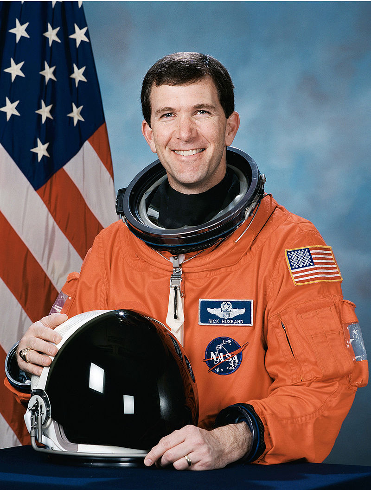

Space Shuttle Columbia
The Space Shuttle Columbia was lost as it returned from a two-week mission, STS-107. Damage to the shuttle's thermal protection system (TPS) led to structural failure of the shuttle's left wing and the spacecraft ultimately broke apart during reentry at an altitude of under 65 km. Investigation revealed damage to the reinforced carbon-carbon leading edge wing panel resulted from the impact of a piece of foam insulation that broke away from the external tank during the launch.
The vehicle broke up over the southwestern United States and fell in fragments over eastern Texas and central Louisiana.
Fallen Astronauts
-
Rick Husband  Rick Douglas Husband (July 12, 1957 – February 1, 2003) (Colonel, USAF) was an American astronaut and fighter pilot. He traveled into space twice: as Pilot of STS-96 and Commander of STS-107. He and the rest of the crew of STS-107 were killed when Columbia disintegrated during reentry into the Earth's atmosphere. Husband is a recipient of the Congressional Space Medal of Honor.
-
William C. McCool William Cameron "Willie" McCool (September 23, 1961 – February 1, 2003) (Cmdr, USN) was an American naval officer and aviator, test pilot, aeronautical engineer, and NASA astronaut, who was the pilot of Space Shuttle Columbia mission STS-107. He and the rest of the crew of STS-107 were killed when Columbia disintegrated during re-entry into the atmosphere. He was the youngest male member of the crew. McCool was posthumously awarded the Congressional Space Medal of Honor.
-
Michael P. Anderson 
Michael Phillip Anderson (December 25, 1959 – February 1, 2003) was a United States Air Force officer and NASA astronaut. Anderson and his six fellow crew members were killed in the Space Shuttle Columbia disaster when the craft disintegrated during its re-entry into the Earth's atmosphere. Anderson served as the payload commander and lieutenant colonel in charge of science experiments on the Columbia. Anderson was posthumously awarded the Congressional Space Medal of Honor.
-
David M. Brown 
David McDowell Brown (April 16, 1956 – February 1, 2003) was a United States Navy captain and a NASA astronaut. He died on his first spaceflight, when the Space Shuttle Columbia (STS-107) disintegrated during orbital reentry into the Earth's atmosphere. Brown became an astronaut in 1996, but had not served on a space mission prior to the Columbia disaster. Brown was posthumously awarded the Congressional Space Medal of Honor.
-
Kalpana Chawla Kalpana Chawla (March 17, 1962 – February 1, 2003) was an American astronaut, engineer, and the first woman of Indian origin to go to space. She first flew on Space Shuttle Columbia in 1997 as a mission specialist and primary robotic arm operator. In 2003, Chawla was one of the seven crew members who died in the Space Shuttle Columbia disaster when the spacecraft disintegrated during its re-entry into the Earth's atmosphere. Chawla was posthumously awarded the Congressional Space Medal of Honor, and several streets, universities, and institutions have been named in her honor. She is regarded as a national hero in India.
-
Laurel Clark Laurel Blair Clark (née Salton; March 10, 1961 – February 1, 2003) was an American medical doctor, United States Navy Captain, NASA astronaut and Space Shuttle mission specialist. Clark died along with her six fellow crew members in the Space Shuttle Columbia disaster. She was posthumously awarded the Congressional Space Medal of Honor.
-
Ilan Ramon Ilan Ramon (June 20, 1954 – February 1, 2003) was an Israeli fighter pilot and later the first and thus far only Israeli astronaut. Ramon was a space shuttle payload specialist of STS-107, the fatal mission of Columbia, in which he and six other crew members were killed in the re-entry accident. At 48, he was the oldest member of the crew. Ramon is the only foreign recipient of the United States Congressional Space Medal of Honor, which he was awarded posthumously.